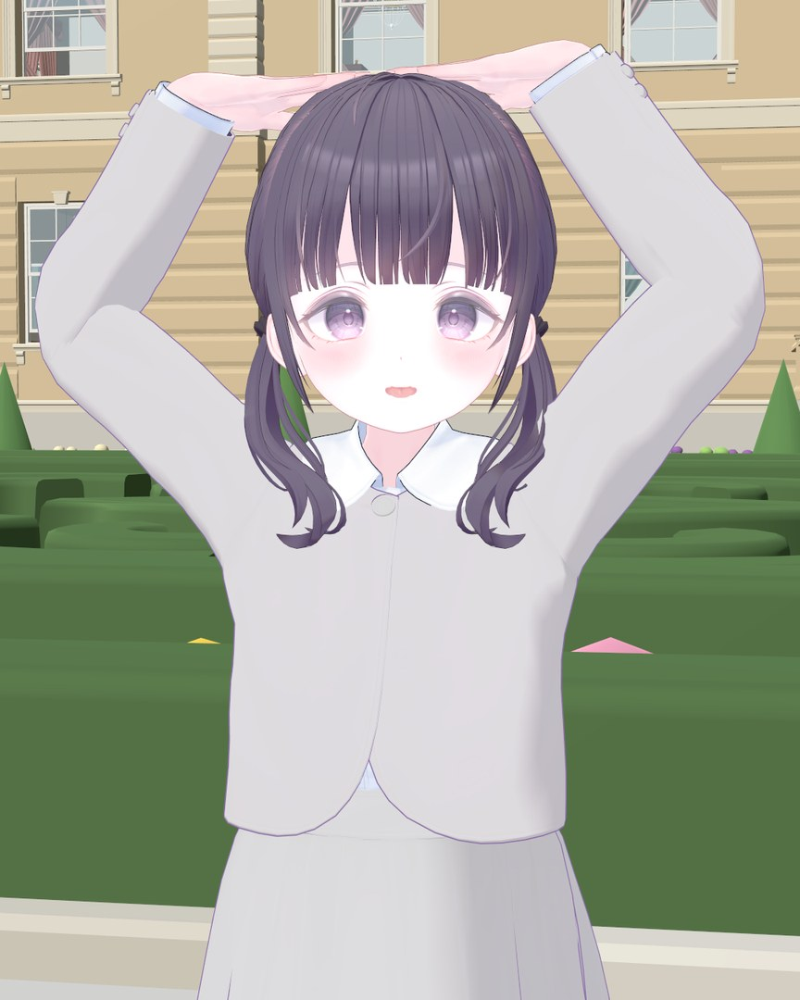
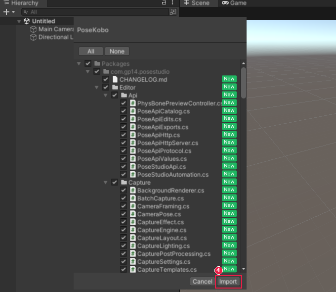
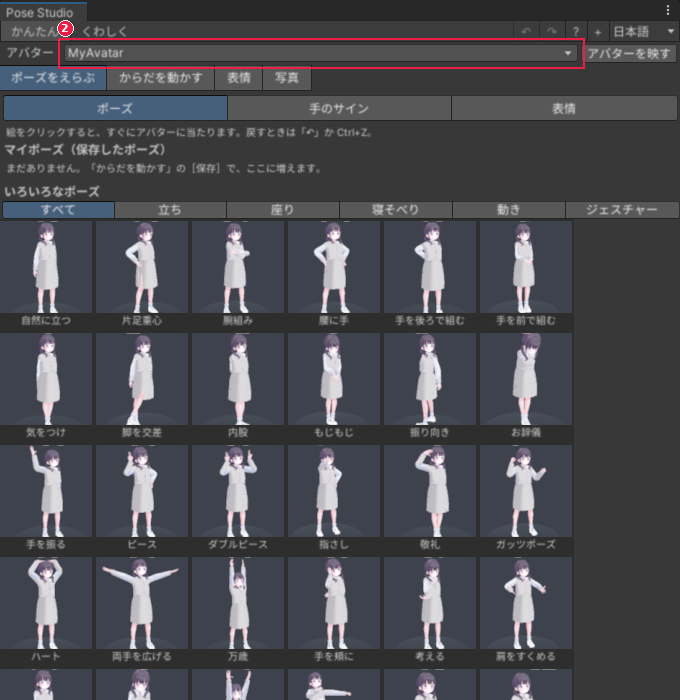
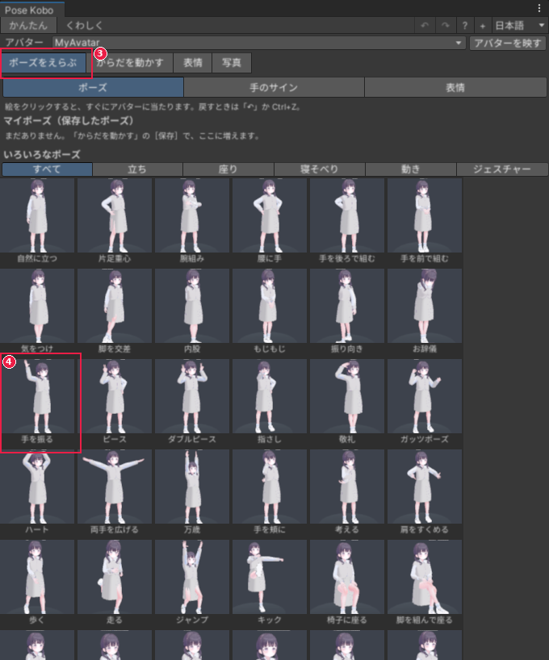
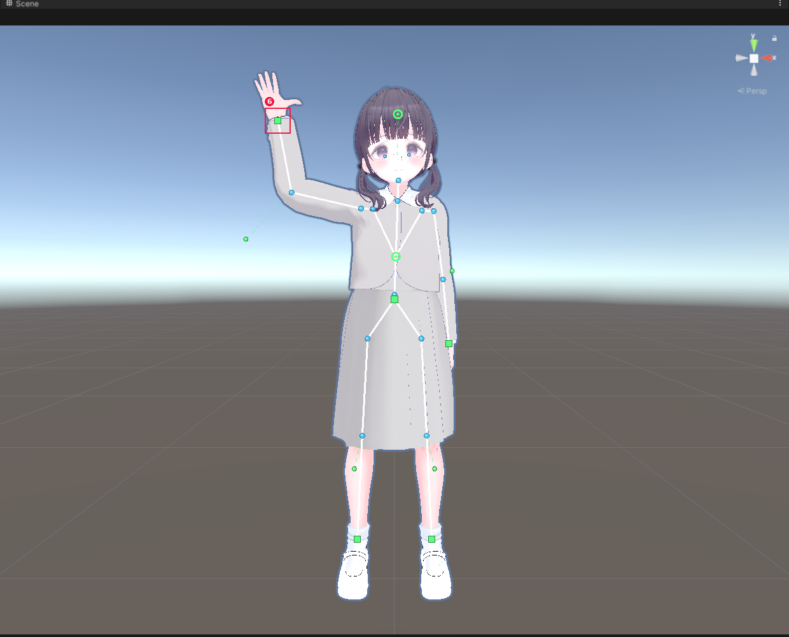
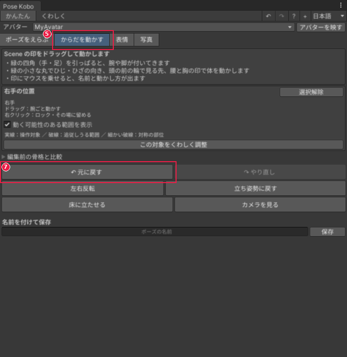
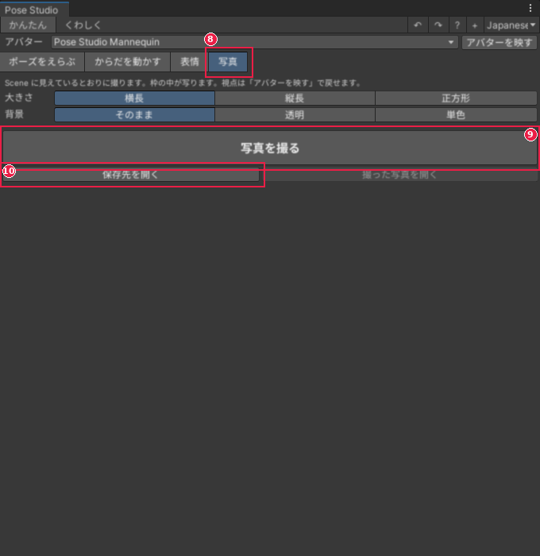

ポーズスタジオ 使用手引書
- 版: 0.1.0
- 日付: 2026-10-28
Unity に不慣れな方でも、お使いいただけます。
この手引書で、できるようになること
- ポーズスタジオを、Unity に入れる。
- アバターに、ポーズを付ける。
- 手の形や表情を、整える。
- できたポーズを、写真に撮る。
目次
やりたいことから探す
- できあいのポーズを当てたい
- 手足を引っぱって、ポーズを直したい
- 関節を少しずつ回して、細かく直したい
- 指や手の形を変えたい
- 表情を付けたい
- 髪やスカートの形を整えたい
- ポーズを保存して、あとで使いたい
- きれいな写真を撮りたい
- 動画や GIF にしたい
- VRChat の中で、ポーズを使いたい
うまくいかないときは、困ったときを見てください。
知らない言葉が出たら、言葉の一覧を見てください。
はじめに
ポーズスタジオでできること
ポーズスタジオは、Unity の中で、人型のアバターにポーズを付ける道具です。
できたポーズは、そのまま写真や動画に撮れます。

ポーズスタジオで、ポーズを付けて撮った写真です。
- ポーズの絵をクリックするだけで、アバターにポーズが付きます。
- 手や足の印を引っぱると、うでや足がついてきます。
- プレイモード（Unity でゲームを動かす状態）に、入らなくても使えます。
- 保存したポーズは、ほかのアバターにも使えます。
安心して試せます
- まちがえても、窓の上の［↶］で 1 つ前に戻せます。Ctrl+Z でも戻せます。かんたん表示の［からだを動かす］では、［元に戻す］を押します。
- マイポーズの［消す］だけは、戻せません。
- アバターに、ポーズスタジオの部品は付きません。アップロードのじゃまをしません。
- アバターの元のファイル（モデルやプレハブ）は、書きかえません。
- ポーズを同じ名前で保存すると、名前のあとに番号が付きます。前のポーズは上書きされません。［くわしい保存］では、上書きする前にたしかめる画面が出ます。
必要なもの
- Unity 2022.3。VRChat 用のアバターなら、VRChat が決めた版（2022.3.22f1）をおすすめします。
- 人型（Humanoid）として設定された、アバターのモデル。
- VRChat SDK は、なくても使えます。あると、VRChat 用の機能が増えます。
- ポーズスタジオは、BOOTH の商品ページで手に入ります。
かかる時間
入れるまでが約 5 分、はじめての練習が約 10 分です。
先に知っておく言葉
- シーンビュー: Unity の真ん中にある、アバターを見る画面です。
- ヒエラルキー: Unity の左にある、置いてある物の一覧です。
- プロジェクトウィンドウ: Unity の下にある、ファイルの一覧です。
- 人型（Humanoid）: 頭・うで・足の骨を、Unity が見分けられるアバターです。
- 印（ハンドル）: シーンビューに出る、引っぱるための四角や丸です。
画像の見方
赤い枠と数字は、押す場所です。数字は、下の手順の番号と同じです。
苦手なこと
ポーズスタジオにも、苦手なことがあります。買う前に、ここでたしかめてください。
使えるアバター
- 人型（Humanoid）でないモデルには、ポーズを付けられません。動物の形などで、人型の設定ができないものは使えません。
動き・揺れ
- ポーズは、止まった形を作る道具です。歩くなどの動きを、1 から作る道具ではありません。ポーズとポーズの間を、なめらかにつなぐ動画は作れます。
- 髪やスカートの揺れは、止まった形として整えます。PhysBone の揺れを見るには、VRChat SDK（3.10.5 以降）が要ります。
VRChat の中
- カメラのほうを見るポーズは、VRChat の中では作れません。VRChat SDK が入っているプロジェクトでは、ポーズに入れた目の向きで止めることはできます。
- 明るさや画面の効果を、VRChat の中で変える機能はありません。写真のときは、Unity の中の撮影の設定を使ってください。
書き出し
- 動画を MP4 で書き出すには、ffmpeg（動画を作る無料のソフト）が要ります。なくても、GIF と PNG で書き出せます。
入れ方
ツールを手に入れます
BOOTH の商品ページで「ポーズスタジオ」を買い、ZIP ファイルをダウンロードします。
ZIP ファイルを解凍します。中に
PoseStudio.unitypackageがあることを、たしかめます。
Unity に入れます
先に、アバターが入っている Unity のプロジェクトを開いておきます。
PoseStudio.unitypackageをダブルクリックします。Unity の上のメニューから、［Assets > Import Package > Custom Package...］を選んでも同じです。
取り込む物の一覧の窓が出ます。上に「PoseStudio」と出ます。すべてに印が付いたまま、右下の［Import］を押します。

読み込みが終わるまで、待ちます。
入ったことを、たしかめます
このパソコンで初めて入れたときは、ポーズスタジオの窓が自動で開きます。
開かないときは、Unity の上のメニューから［Tools > Pose Studio > Open］を選びます。
窓が開けば、入っています。メニューが出ない・赤いエラーが出るときは、困ったときを見てください。
新しい版を入れるとき
新しい版の PoseStudio.unitypackage を、上と同じ手順で入れます。
古い版を消す必要はありません。保存したポーズも残ります。
入れたあとにエラーが出たときは、プロジェクトウィンドウの「Packages」の中の「Pose Studio」を消してから、入れ直します。
はじめての練習
アバターにポーズを付けて、写真を 1 枚撮ります。
練習なので、どのアバターでも大丈夫です。アバターがないときは、練習用のマネキン（人の形の人形）を出せます。
アバターを入れます
ヒエラルキーで、ポーズを付けるアバターをクリックします。
Unity の上のメニューから、［Tools > Pose Studio > Open］を選びます。
窓が開き、アバターが自動で入ります。シーンビューに、アバターの全身が映ります。
アバターがいないときは、窓の［試し用のマネキンを出す］を押します。

ポーズを付けます
窓の［ポーズをえらぶ］を押します。
ポーズの絵の中から、「手を振る」をクリックします。アバターが、手を振るポーズになります。

手を動かします
窓の［からだを動かす］を押します。シーンビューの手と足に、緑の四角が出ます。
右手の緑の四角を、上へドラッグします。うでが、ついてきます。

［元に戻す］を押します。手が、動かす前に戻ります。Ctrl+Z でも戻せます。

写真を撮ります
窓の［写真］を押します。
［写真を撮る］を押します。シーンビューに見えているとおりに撮れます。
［保存先を開く］を押すと、撮った写真のフォルダが開きます。

写真は、プロジェクトのフォルダの中の Screenshots/PoseStudio に保存されます。
うまくいかないときは、困ったときを見てください。
できあいのポーズを当てたい
この章は、これから書きます。
手足を引っぱって、ポーズを直したい
この章は、これから書きます。
関節を少しずつ回して、細かく直したい
この章は、これから書きます。
指や手の形を変えたい
この章は、これから書きます。
表情を付けたい
この章は、これから書きます。
髪やスカートの形を整えたい
この章は、これから書きます。
ポーズを保存して、あとで使いたい
この章は、これから書きます。
きれいな写真を撮りたい
この章は、これから書きます。
動画や GIF にしたい
この章は、これから書きます。
VRChat の中で、ポーズを使いたい
この章は、これから書きます。
画面の説明（かんたん表示）
この章は、これから書きます。
画面の説明（ポーズ・手・表情）
この章は、これから書きます。
画面の説明（揺れもの・ライブラリ）
この章は、これから書きます。
画面の説明（撮影・動画・画像編集）
この章は、これから書きます。
画面の説明（VRChat・設定）
この章は、これから書きます。
困ったとき
この章は、これから書きます。
言葉の一覧
この章は、これから書きます。
プログラムから使う
この章は、これから書きます。